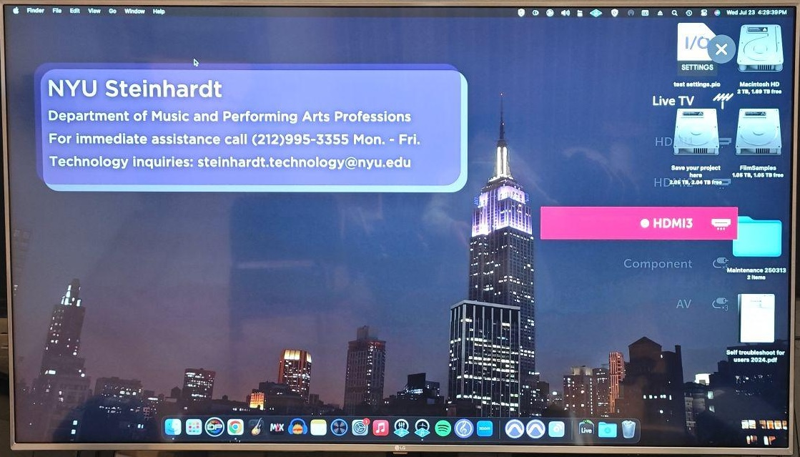

Studio A
Room PC Video
Red: Main Desk – monitor, keyboard, and input access for the studio Mac. HDMI and audio jack are on the right side of the desk.
Green: Closet – houses the Mac itself. If it's ever off, you can check here to power it back on.
1/2
Use the remote control to turn on the TV and select HDMI-3 as the source.

Monitor and TV should display the Room PC screen automatically.
Laptop Video
Connect to the system via HDMI adapter.

Use the remote control to select HDMI-3 as the TV source.